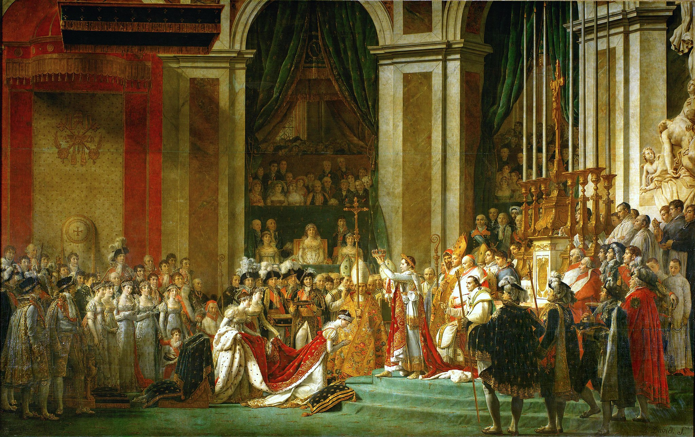

<head>
<meta charset="UTF-8" />
<meta name="keywords" content="drawing, painting" />
<meta name="description" content="drawings by Sunjy" />
<title>Sunjy</title>
<link rel="shortcut icon" type="image/x-icon" href="../../mImages/mCommon/favicon.ico" media="screen" />
<link rel="stylesheet" type="text/css" href="../../mCsses/mCommon/mCssA.css" />
<link rel="stylesheet" type="text/css" href="../../mCsses/mCommon/mCssB.css" />
<link rel="stylesheet" type="text/css" href="../../mCsses/mCommon/mCssC.css" />
<link rel="stylesheet" type="text/css" href="../../mCsses/mCommon/mCssD.css" />
<link rel="stylesheet" type="text/css" href="../../mCsses/mContent/mCssA.css" />
<link rel="stylesheet" type="text/css" href="../../mCsses/mContent/mCssB.css" />
<link rel="stylesheet" type="text/css" href="../../mCsses/mContent/mCssC.css" />
<link rel="stylesheet" type="text/css" href="../../mCsses/mContent/mCssD.css" />
</head>
<script type="text/javascript" src="../../mScripts/mContent/mContentAA.js" /></script>
<script type="text/javascript" src="../../mScripts/mContent/mContentAB.js" /></script>
<script type="text/javascript" src="../../mScripts/mContent/mContentAC.js" /></script>
<script type="text/javascript" src="../../mScripts/mContent/mContentAD.js" /></script>
<script type="text/javascript"></script> 
<script type="text/javascript">
document.write('<div class="mImgAbsolute"></div>');
/*
document.write('<p class="mFontSizeBColor" />From a white paper...</p>');
document.write('<table class="center"><tr><td>');
document.write('');
document.write('</td></tr></table>');
*/
</script>


<script type="text/javascript">
document.write('<p class="mFontSizeBColor" />The Coronation of Napoleon</p>');
document.write('<p class="mFontSizeSColor" />“The Coronation of Napoleon” by Jacques-Louis David shows all eyes turned towards Napoleon and the crown. He is the central subject of this composition.<br><br>Napoleon is standing, dressed in coronation robes similar to those of Roman emperors. The coronation of Napoleon as Emperor that took place on Sunday, December 2, 1804, was a masterful act of propaganda.<br><br>This painting, which is a large imposing painting at almost 10 meters (33 ft) wide by 6 meters (20 ft) tall, was part of the propaganda effort.<br><br>Napoleon wanted to establish the legitimacy of his imperial reign and new nobility. With this objective, he designed a ceremony, unlike that of any other in the history of coronations.<br><br>Napoleon was a ceremony created by Napoleon and held in the magnificent cathedral of Notre Dame de Paris in the presence of Pope Pius VII.<br><br>The Pope initially did not want to travel to Paris without an excellent religious reason. However, in order not to jeopardize the new balance between Church and State, the Pope accepted the request to attend the coronation.<br><br>However, at the moment, the Pope was to crown Napoleon. The Emporer took the crown from the Pope and put it on his head. This act was seen as a public humiliation of the Pope.<br><br>Napoleon brought together various rites and customs, incorporating rituals of Carolingian tradition, the ancien régime, and the French Revolution, all presented in excessive luxury. <br><br>The painting depicts many of the leading figures of the time, including:<br><br>•Empress Josephine is kneeling in a submissive position. She received the crown from the hands of her husband, not the pope. Her robes are decorated with silk.<br><br><br>•Maria Letizia Ramolino, who was the mother of Napoleon, was placed in the stands by the painter. She did not attend the ceremony to protest the friction between Napoleon and two of his brothers.<br><br>•Joseph Bonaparte, who was Napoleon’s older brother, did not attend because of an argument with Napoleon. He was added in absence to this painting as the first figure from the left in the foreground.<br><br>•Louis Bonaparte, who was Napoleon’s younger brother, who married the daughter of Josephine, is second from the left in the foreground.<br><br><br>•Pope Pius VII is the figure seated behind Napolean. The pope was initially pictured with hands crossed on his lap, but Napoleon instructed that he be depict anointing the proceedings.<br><br><br>•“Dom Raphaël de Monachis, a Greek-Egyptian monk is depicted among the clergymen, standing to the right of the Bishop, with a beard and a red hood.<br><br><br>•Halet Efendi, an Ottoman ambassador, is shown with a white turban left of the tall gold candelabrum.<br><br><br>David finished the original version of this painting in 1807 and then painted a second version of this painting, which was eventually acquired by The Palace of Versailles in 1947.<br><br>David painted the copy based on the preparatory drawing he had for the original, and the two versions differ slightly.<br></p>');
document.write('<table class="center" /><tr><td>');
document.write('<br>Napoleon is standing, dressed in coronation robes similar to those of Roman emperors. The coronation of Napoleon as Emperor that took place on Sunday, December 2, 1804, was a masterful act of propaganda.<br><br>This painting, which is a large imposing painting at almost 10 meters (33 ft) wide by 6 meters (20 ft) tall, was part of the propaganda effort.<br><br>Napoleon wanted to establish the legitimacy of his imperial reign and new nobility. With this objective, he designed a ceremony, unlike that of any other in the history of coronations.<br><br>Napoleon was a ceremony created by Napoleon and held in the magnificent cathedral of Notre Dame de Paris in the presence of Pope Pius VII.<br><br>The Pope initially did not want to travel to Paris without an excellent religious reason. However, in order not to jeopardize the new balance between Church and State, the Pope accepted the request to attend the coronation.<br><br>However, at the moment, the Pope was to crown Napoleon. The Emporer took the crown from the Pope and put it on his head. This act was seen as a public humiliation of the Pope.<br><br>Napoleon brought together various rites and customs, incorporating rituals of Carolingian tradition, the ancien régime, and the French Revolution, all presented in excessive luxury. <br><br>The painting depicts many of the leading figures of the time, including:<br><br>•Empress Josephine is kneeling in a submissive position. She received the crown from the hands of her husband, not the pope. Her robes are decorated with silk.<br><br><br>•Maria Letizia Ramolino, who was the mother of Napoleon, was placed in the stands by the painter. She did not attend the ceremony to protest the friction between Napoleon and two of his brothers.<br><br>•Joseph Bonaparte, who was Napoleon’s older brother, did not attend because of an argument with Napoleon. He was added in absence to this painting as the first figure from the left in the foreground.<br><br>•Louis Bonaparte, who was Napoleon’s younger brother, who married the daughter of Josephine, is second from the left in the foreground.<br><br><br>•Pope Pius VII is the figure seated behind Napolean. The pope was initially pictured with hands crossed on his lap, but Napoleon instructed that he be depict anointing the proceedings.<br><br><br>•“Dom Raphaël de Monachis, a Greek-Egyptian monk is depicted among the clergymen, standing to the right of the Bishop, with a beard and a red hood.<br><br><br>•Halet Efendi, an Ottoman ambassador, is shown with a white turban left of the tall gold candelabrum.<br><br><br>David finished the original version of this painting in 1807 and then painted a second version of this painting, which was eventually acquired by The Palace of Versailles in 1947.<br><br>David painted the copy based on the preparatory drawing he had for the original, and the two versions differ slightly.<br>" />');
document.write('</td></tr></table>');
</script>


